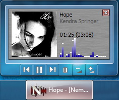

Begin
playback on start: Automatically begin playback when Nemp
starts
Remember
last track position will continue playback at the exact
position where Nemp was closed the last time.
If
applicable: Start playback with new file
is used, when Nemp is started by double clicking an audio file in the
Windows Explorer
Switch to
enqueued file (even if another track is already running)
will switch to the new file from the Windows Explorer, if if Nemp is
already playing another track.
Allow
multiple instances: Usually you will run only one instance
of Nemp, but in some cases you may want to start another one.
Nemp auto-updater
Configure whether and how often Nemp should search for updates. There
is no automatic update yet, but you will get a message if a new version
is available und directed to the download page.
Controls
Configure media keys, hotkeys, volume control and tabulator settings.
Taskbar and tray
Configure the display of Nemp in the Windows taskbar. The Windows7
buttons in the taskbar will only work, if you choose an option without
a (*).

The Nemp Deskband can be installed on Windows XP. For Windows7 you
should use the buttons in the taskbar.